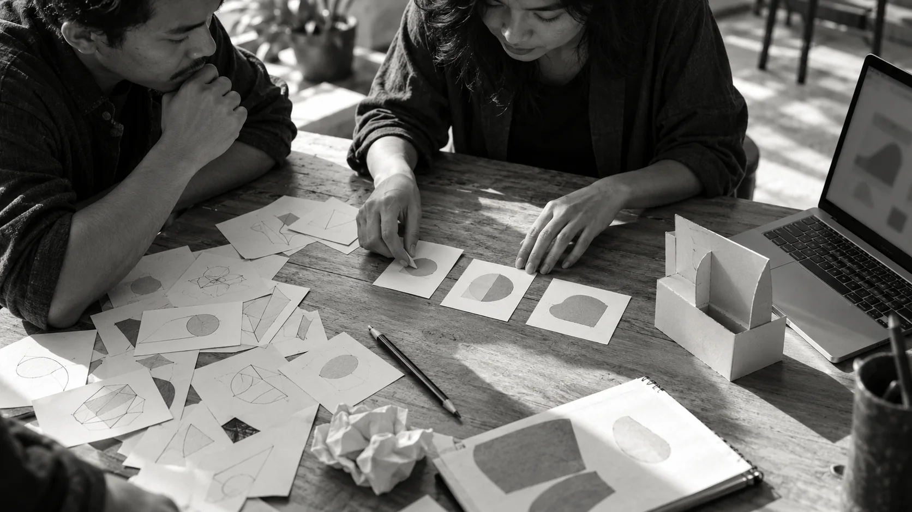
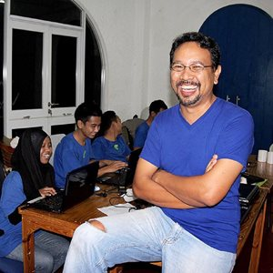
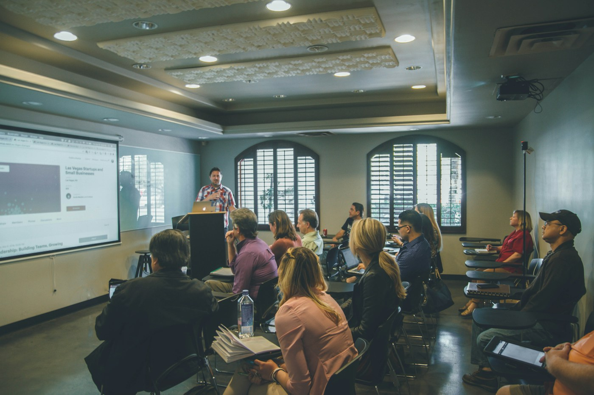
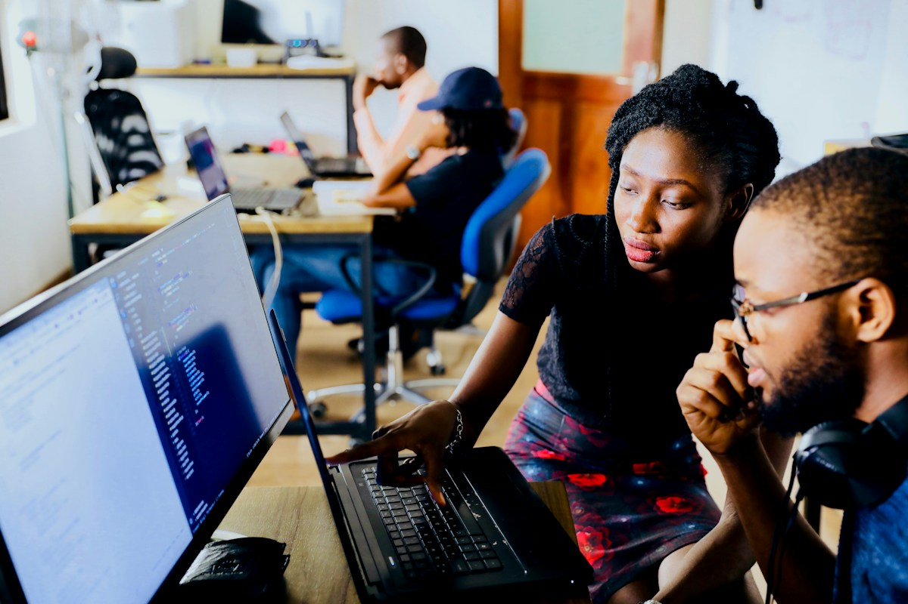

AI Thinking & Innovation Workshop
Memimpin dengan AI.
Menciptakan nilai nyata.
Workshop satu hari bagi pemimpin dan profesional
untuk mengubah potensi AI menjadi nilai bagi organisasi.
Workshop satu hari. Kepemimpinan, strategi, dan penerapan AI.
Daftar workshop , buka di tab baruPendaftaran awal. Keikutsertaan dikonfirmasi oleh tim Clevio.
Keikutsertaan dikonfirmasi oleh tim Clevio.
01 / 07 Perspektif manusia. Potensi teknologi.
Memahami tantanganKonteks perubahan
Dunia kerja berubah.
Kepemimpinan berkembang.
Perspektif yang tepat
menentukan arah perubahan.
Mengapa ini penting
- Otomasi mengubah
peran dan proses kerja. - Keahlian perlu berkembang
seiring kemajuan teknologi. - Nilai tercipta melalui
pertimbangan dan keputusan manusia.
Tiga arah pengembangan
- 01
Hyper-Productive
Lebih produktif.
Memanfaatkan AI untuk meningkatkan fokus dan kualitas kerja.
Fokus pada pekerjaan bernilai.
- 02
Hyper-Iterative
Lebih adaptif.
Menguji asumsi dan menyempurnakan gagasan melalui eksplorasi.
Uji gagasan, sempurnakan solusi.
- 03
Hyper-Impactful
Lebih berdampak.
Mengarahkan teknologi pada hasil yang relevan bagi organisasi.
Arahkan AI pada hasil yang relevan.
02 / 07 Merespons perubahan dengan arah yang jelas.
Pendekatan pembelajaranPendekatan pembelajaran
Tiga tahap terarah.
Berangkat dari konteks Anda.
Bawa tantangan nyata dari lingkungan kerja Anda.
Kembangkan menjadi gagasan dan rencana tindakan.
Pilih tahap untuk melihat detail.

01
Memahami
konteks bisnisPahami konteks.Mengidentifikasi kebutuhan, tantangan, dan peluang yang paling relevan bagi organisasi.
02
Design Thinking
+ AIRancang solusi.Merancang alternatif solusi yang berpusat pada manusia dengan dukungan AI.
03
Validasi
& penyempurnaanUji & sempurnakan.Menguji asumsi, menyempurnakan pendekatan, dan menyusun langkah implementasi.
03 / 07 Pembelajaran melalui penerapan.
Hasil pembelajaranNilai Clevio AI Pro
Lima kompetensi.
Untuk memimpin di era AI.
HOTS
Berpikir kritis dan strategis
Design Thinking
Memahami kebutuhan manusia
Literasi AI
Menilai potensi dan keterbatasan AI
Kepemimpinan
Mengarahkan perubahan
Adaptabilitas
Belajar dan berkembang
Peserta & format program
Peserta
Pemimpin, profesional,
dan tim penggerak inovasi.
Format program
Satu hari penuh.
Praktik langsung, berbasis masalah,
dengan pendekatan flipped learning.
04 / 07 Relevan bagi peran dan organisasi Anda.
Profil fasilitatorFasilitator program

Manusia. Teknologi. Nilai.
Aranggi
Soemardjan.
Serial Innovator for the Greater Good.
Tentang fasilitator
Menghubungkan pemahaman atas kebutuhan manusia dengan potensi teknologi melalui Design Thinking dan AI.
05 / 07 Memperluas perspektif melalui dialog.
Ruang pembelajaranRuang pembelajaran
Pertukaran perspektif.
Pengembangan gagasan.Ruang kolaborasi.
Foto ilustrasi sementara.
Bukan dokumentasi kegiatan Clevio.


Foto ilustrasi: Unsplash. Digunakan untuk menggambarkan suasana pembelajaran dan kolaborasi.
Ilustrasi: Unsplash. Bukan dokumentasi Clevio.
06 / 07 Eksplorasi yang berangkat dari kolaborasi.
Informasi pendaftaran